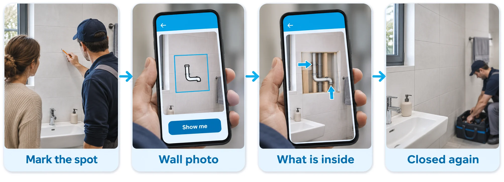

See Inside First




- Problem
- The customer cannot picture what is behind the wall, so she waits or picks the cheapest.
- Who has it
- Plumbers, electricians and roofers who work out of sight.
- Nearest evidence
- No post found yet. Nearest: Housecall Pro, 2025-12-10